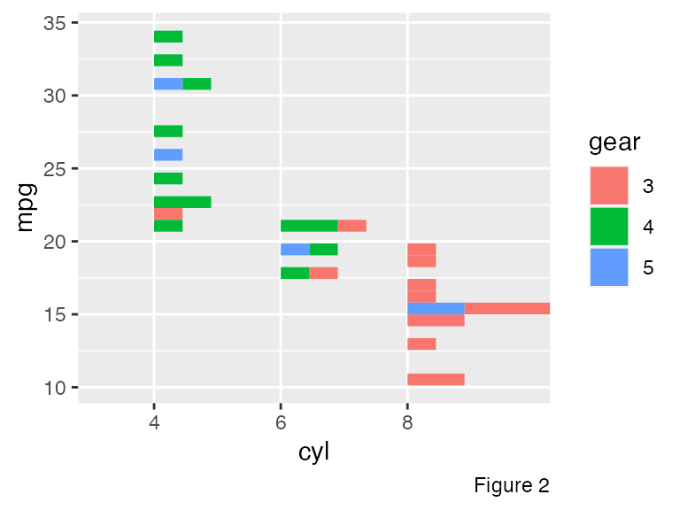
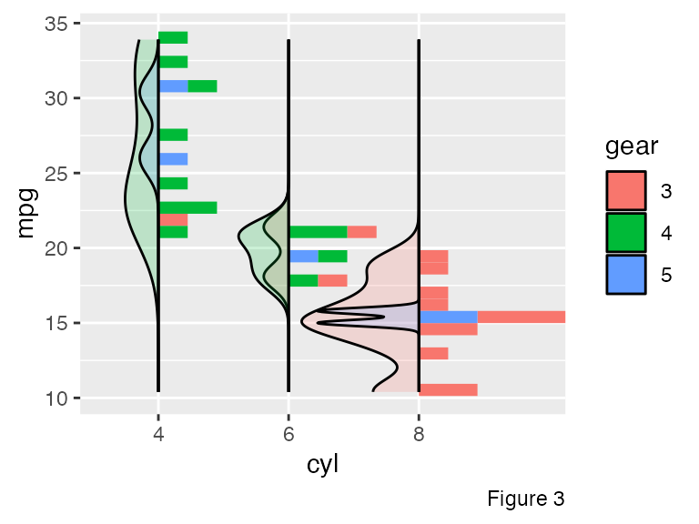

Histogram and Density
Wayne Oldford and Zehao Xu
2022-10-22
histogram-density-.RmdHistograms (and bar plots) are common tools to visualize a single variable. The x axis is often used to locate the bins and the y axis is for the counts. Density plots can be considered as the smoothed version of the histogram.
Boxplot is another method to visualize one dimensional data. Five
summary statistics can be easily traced on the plot. However, compared
with histograms and density plots, boxplot can accommodate two
variables, groups (often on the x axis) and
ys (on the y axis).
In ggplot2, geom_histogram and
geom_density only accept one variable, x or
y (swapped). Providing both positions is forbidden.
Inspired by the boxplot (geom_boxplot in
ggplot2), we create functions geom_histogram_,
geom_bar_ and geom_density_ which can
accommodate both variables, just like the geom_boxplot!
Hist (histogram and bar plot)
Two dimensional bar plot: geom_bar_
Consider the mtcars data set.
Suppose that we are interested in the relationship of number of gears
given the cyl (number of cylinders).
library(ggmulti)
ggplot(mtcars2,
mapping = aes(x = cyl, y = gear)) +
geom_bar_(as.mix = TRUE) +
labs(caption = "Figure 1")Though the Figure 1, we can tell that
-
Compare vertically: given the number of engines, tell the gears
Most V8 engine cars prefer 3 gear transmission. V8 cars do not use 4 gear transmission
Most V4 engine cars prefer 4 gears transmission.
-
Compare horizontally: given the number of gears, tell the engines
Most 3 gear transmission cars carry a V8 engine.
Most 4 gear transmission cars carry a V4 engine, then V6 engine, but never V8 engine.
Five gear transmission cars can carry either a V4, V6 or V8 engine. However, compared with other two transmissions, 5 gear is not a common choice.
Two dimensional histogram: geom_histogram_
Suppose now, we are interested in the distribution of
mpg (miles per gallon) with the respect to the
cyl (as “x” axis) and gear (as “fill”).
Through the Figure 2, we can easily tell that as the number of cylinders
rises, the miles/gallon drops significantly. Moreover, the number of six
cylinder cars is much less that the other two in our data. In addition,
the transmission of V8 cars is either 3 or 5 (identical to the
conclusion we draw before).
g <- ggplot(mtcars2,
mapping = aes(x = cyl,
y = mpg,
fill = gear)) +
geom_histogram_(as.mix = TRUE) +
labs(caption = "Figure 2")
g
Just call geom_hist!
Function geom_histogram_ is often used as one factor is
categorical and the other is numerical, while function
geom_bar_ accommodate two categorical variables. The former
one relies on stat = bin_ and the latter
one is on stat = count_. However, if we
turn the factor of interest as numerical in geom_bar_,
there would be no difference between the output of a bar plot and a
histogram. Hence, function geom_hist is created by
simplifying the process. It understands both cases and users can just
call geom_hist to create either a bar plot or a
histogram.
Density
We could also draw density plot side by side to better convey the
data of interest. With geom_density_, both summaries can be
displayed simultaneously in one chart. Note that for cylinder 4 and 6,
the density representing 3 gear transmission and 5 gear transmission
cars are missing respectively. The reason is that for these two
subgroups, the number of observations is not big enough to be used to
compute the density.
g +
# parameter "positive" controls where the summaries face to
geom_density_(as.mix = TRUE,
positive = FALSE,
alpha = 0.2) +
labs(caption = "Figure 3")
In Figure 3, an argument as.mix is set as
TRUE. What does it mean? Before we introduce it, let us
look at the total count of cyl in mtcars.
tab <- table(mtcars2$cyl)
knitr::kable(
data.frame(
cyl = names(tab),
count = unclass(tab),
row.names = NULL
)
)| cyl | count |
|---|---|
| 4 | 11 |
| 6 | 7 |
| 8 | 14 |
In the sample, the total number of cylinder 8 cars is approximately
twice as much as the group cylinder 6. Within each group, if the
as.mix is set as FALSE (default), shown as
Figure 4, the area for each subgroup (in general, one color represents
one subgroup) is 1 and the whole area is 3 in total.
There is no problem to think it as a real “density”, however, if we
consider it as a “continuous histogram” (the binwidth is approaching 0),
it may be misleading somehow. Instead, the as.mix could be
set as TRUE so that the sum of the density area within each
group is 1. The area for each subgroup is proportional
to the count, as Figure 5.
gd1 <- ggplot(mtcars2,
mapping = aes(x = mpg, fill = cyl)) +
# it is equivalent to call `geom_density()`
geom_density_(alpha = 0.3) +
scale_fill_brewer(palette = "Set3") +
labs(caption = "Figure 4")
gd2 <- ggplot(mtcars2,
mapping = aes(x = mpg, fill = cyl)) +
geom_density_(as.mix = TRUE, alpha = 0.3) +
scale_fill_brewer(palette = "Set3") +
labs(caption = "Figure 5")
gridExtra::grid.arrange(gd1, gd2, nrow = 1)Additionally, function geom_density_ (so does
geom_histogram_) provides another parameter
scale.y to set the scales across different groups
(different cylinder types). The default data indicates that
the area of each density estimates is proportional to the overall count.
If the scale.y is set as group, regardless of
the other groups, the density estimate of each subgroup is scaled
respecting by its own group, as Figure 6. The benefit is that, within
each group, the pattern of the density is easier to be visualized and
compared. However, across different groups, it is meaningless
to compare.
g +
# parameter "positive" controls where the summaries face to
geom_density_(positive = FALSE,
alpha = 0.2,
scale.y = "group") +
labs(caption = "Figure 6")
Scaling
Functions geom_density_ and geom_histogram_
provide two scaling controls, as.mix and
scale.y. DO NOT be confused. The
as.mix controls the scaling within each group and the
scale.y controls the scaling across different groups. Well,
…, if you are still confused, the following graph may help you better
understand the as.mix and scale.y.
The data has two groups “1” and “2”. Within each group, there are two subgroups “A” and “B”. The count of each subgroup is shown as follows.
data <- data.frame(x = c(rep("1", 900), rep("2", 100)),
y = rnorm(1000),
z = c(rep("A", 100), rep("B", 800),
rep("A", 10), rep("B", 90)))
data %>%
dplyr::group_by(x, z) %>%
summarise(count = n()) %>%
kable()| x | z | count |
|---|---|---|
| 1 | A | 100 |
| 1 | B | 800 |
| 2 | A | 10 |
| 2 | B | 90 |
Figure 7 shows the all four combinations of scale.y and
as.mix.
-
Compare the graphics vertically:
scale.y = group: within each group, either bins or densities are in a relatively large scale. For example, for group “2”, the total count is only one tenth of the group “1”. With such scaling strategy, the pattern of its bin/density can be visualized easily. However, through this figure, we cannot tell the ratio of the total number of group “1” to group “2”.scale.y = data: the area of each group is proportional to its count. Through the figure, we can easily tell that there is more observations in group “1”. However, for the minority group “2”, it is really hard to tell its distribution.
-
Compare the graphics horizontally:
as.mix = TRUE: within each group, the area of the subgroup is proportional to its count. For example, in group “1”, the ratio of the count for subgroup “A” over “B” is \(\frac{1}{8}\) so that the area of the “A” over “B” in group 1 is approximate \(\frac{1}{8}\).as.mix = FALSE: within each group, the area of the subgroup is identical. For group “1”, the ratio of the count for subgroup “A” over “B” is \(\frac{1}{8}\), but in the Figure, the area of “A” over “B” is approximate \(1:1\).
grobs <- list()
i <- 0
position <- "stack_"
prop <- 0.4
for(scale.y in c("data", "group")) {
for(as.mix in c(TRUE, FALSE)) {
i <- i + 1
g <- ggplot(data, mapping = aes(x = x, y = y, fill = z)) +
geom_histogram_(scale.y = scale.y,
as.mix = as.mix,
position = position,
prop = prop) +
geom_density_(scale.y = scale.y, as.mix = as.mix,
positive = FALSE,
position = position,
alpha = 0.4,
prop = prop) +
ggtitle(
label = paste0("`scale.y` is ", scale.y, "\n",
"`as.mix` is ", as.mix)
)
if(i == 4)
g <- g + labs(caption = "Figure 7")
grobs <- c(grobs, list(g))
}
}
gridExtra::grid.arrange(grobs = grobs, nrow = 2)
Set Positions
Note that when we set position in function
geom_histogram_() or geom_density, we should
use the underscore case, that is “stack_”, “dodge_” or “dodge2_”
(instead of “stack”, “dodge” or “dodge2”).
Position stack_
We can stack the bin/density on top of each other by setting
position = 'stack_' (default
position = 'identity_')
ggplot(mtcars,
mapping = aes(x = factor(am), y = mpg, fill = factor(cyl))) +
geom_density_(position = "stack_",
prop = 0.75,
as.mix = TRUE) +
labs(caption = "Figure 8")
Position dodge_(dodge2_)
Dodging preserves the vertical position of an geom while adjusting the horizontal position.
ggplot(mtcars,
mapping = aes(x = factor(am), y = mpg, fill = factor(cyl))) +
# use more general function `geom_hist_`
# `dodge2` works without a grouping variable in a layer
geom_hist_(position = "dodge2_") +
labs(caption = "Figure 7")
Conclusions
Functions geom_histogram_ and geom_density_
give a general solution of histogram and density plot. Two variables can
be provided to compactly display the distribution of a continuous
variable. Besides, different scaling strategies are provided for users
to tailor their own specific problems. If only one variable is provided
in geom_density_(), geom_histogram_() or
geom_bar_(), the function
ggplot2::geom_density(),
ggplot2::geom_histogram() and
ggplot2::geom_bar() will be executed automatically.